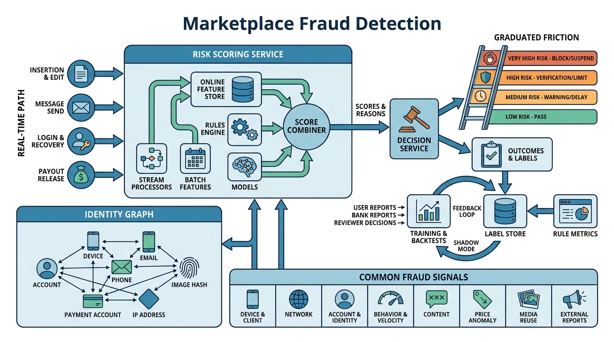

Part V — TRUST: Keeping the Marketplace Safe
Scams, Fakes and Account Takeovers: Fraud Prevention for Listings

Image generated by Google Gemini (gemini-3-pro-image-preview)
Part V — TRUST: Keeping the Marketplace Safe

Image generated by Google Gemini (gemini-3-pro-image-preview)